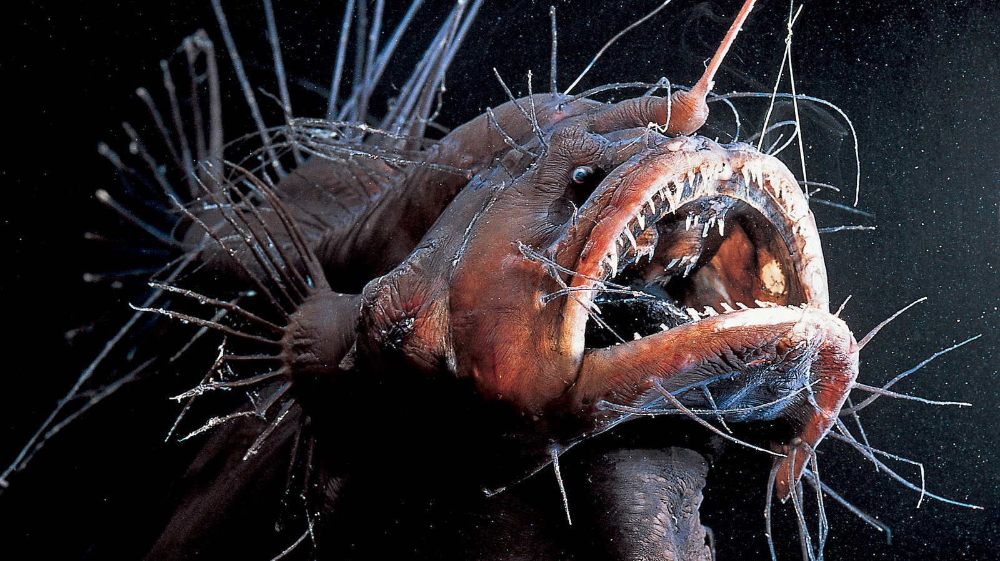
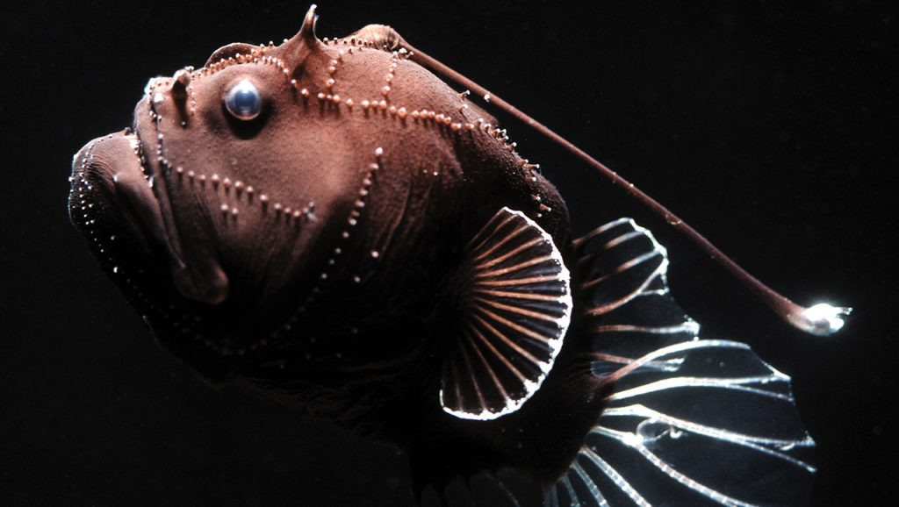
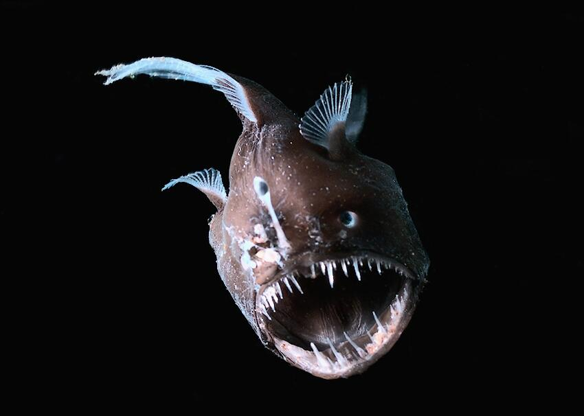

|  |  |
|  |
Sarcastic Fringehead
The sarcastic fringehead (named after my twelve-year-old self) is a deep-sea creature that lives off the west coast of North America. These fish grow to an average of a foot in length and have terrible tempers, which often result in "mouth wrestling" matches over turf. They’re creepy and also really, really weird.
Sarcastic Fringehead
The sarcastic fringehead (named after my twelve-year-old self) is a deep-sea creature that lives off the west coast of North America. These fish grow to an average of a foot in length and have terrible tempers, which often result in "mouth wrestling" matches over turf. They’re creepy and also really, really weird.